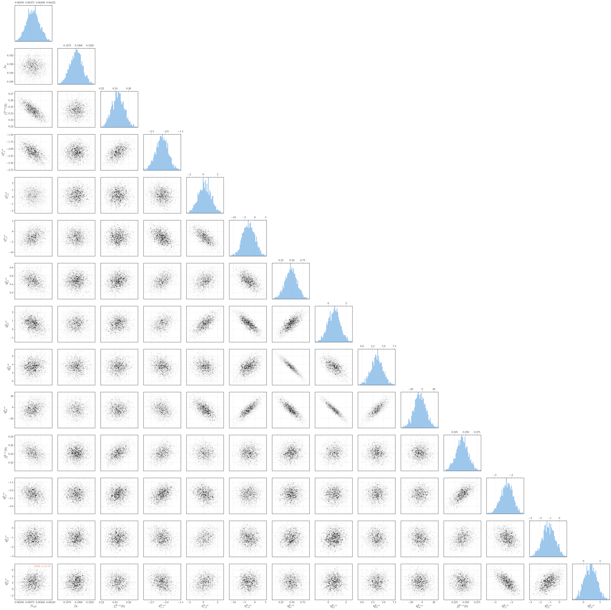
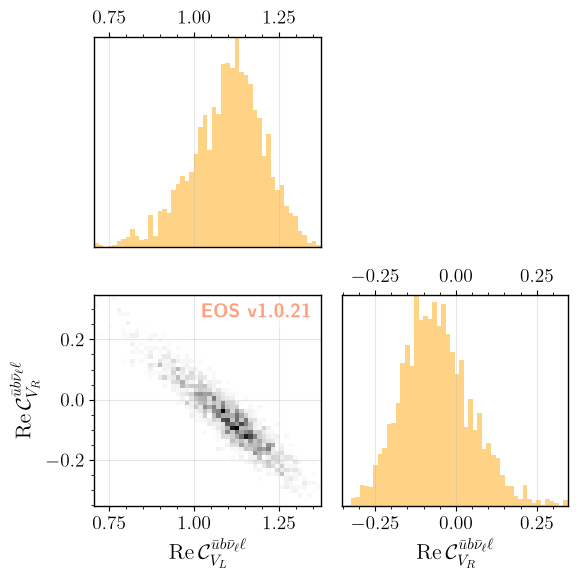

Analysis Organisation
This notebook illustrates how to organise your analysis or analyses. This presentation is based on the physical example of the analysis of \(b \to u \ell \nu\) exclusive decays. The analysis properties are encoded in a companion file named b-to-u-l-nu.yaml, which fully describes a number of individual priors and likelihoods. These objects serve as the building blocks to construct individual posteriors, which are then available for the overall analysis.
Defining the Building Blocks
The analysis file is loaded via eos.AnalysisFile. In our case the file defines two posteriors CKM-all and WET-all, and a few priors and likelihoods, which are used to define the two posteriors. The file format is YAML.
[1]:
import eos
import numpy as np
import os
from IPython.display import Markdown as md
af = eos.AnalysisFile('./b-to-u-l-nu.yaml')
Inserting custom observables ...
Inserted observable: B->pilnu::R_pi_e
... finished inserting 1 custom observables
Declaring custom parameters ...
Declared parameter: ublnul::Re{cVL}
Created parameter alias: ubenue::Re{cVL} -> ublnul::Re{cVL}
Created parameter alias: ubmunumu::Re{cVL} -> ublnul::Re{cVL}
Created parameter alias: ubtaunutau::Re{cVL} -> ublnul::Re{cVL}
Declared parameter: ublnul::Re{cVR}
Created parameter alias: ubenue::Re{cVR} -> ublnul::Re{cVR}
Created parameter alias: ubmunumu::Re{cVR} -> ublnul::Re{cVR}
Created parameter alias: ubtaunutau::Re{cVR} -> ublnul::Re{cVR}
... finished declaring 2 custom parameters
Defining parameters
The parametrization in EOS strives to be as specific as possible. Hence, EOS treats the Wilson coefficients as lepton flavor specific. To restore lepton flavor universality, we create a new set of lepton flavor universal parameters and alias the existing parameters for the lepton specific Wilson coefficients to the new set.
Looking at the b->u parameters available in EOS, we see that all available Wilson coefficients are lepton flavor dependent:
[2]:
display(eos.Parameters(prefix='ub', name='Re{cVL}'))
| qualified name | symbol | unit | value |
|---|---|---|---|
| Standard Model and Effective Field Theory Parameters | |||
| \bar{u}b\bar{\ell}\nu WET Parameters | |||
| The list of parameters describing the Wilson coefficients of \bar{u}b\bar{\ell}\nu operators in the effective Lagrangian \begin{equation} \mathcal{H}^{\bar{u}b\bar{\ell}\nu}_\mathrm{eff} = \frac{4 G_F}{\sqrt{2}} V_{ub} \sum_i \mathcal{C}^{\bar{u}b\bar{\ell}\nu}_i \mathcal{O}^{\bar{u}b\bar{\ell}\nu}_i\,. \end{equation} The operators read: \begin{align} \mathcal{O}_{V_{L(R)}} & = [\bar{u} \gamma^\mu P_{L(R)} b]\, [\bar{\ell} \gamma_\mu P_L \nu_\ell]\\ \mathcal{O}_{S_{L(R)}} & = [\bar{u} P_{L(R)} b]\, [\bar{\ell} P_L \nu_\ell]\\ \mathcal{O}_{T} & = [\bar{u} \sigma^{\mu\nu} b]\, [\bar{\ell} \sigma_{\mu\nu} P_L \nu_\ell] \end{align} | |||
| ubenue::Re{cVL} | \mathrm{Re}\, \mathcal{C}^{\bar{u}b\bar{e}\nu_e}_{V_L} | — | 1.0 |
| ubmunumu::Re{cVL} | \mathrm{Re}\, \mathcal{C}^{\bar{u}b\bar{\mu}\nu_\mu}_{V_L} | — | 1.0 |
| ubtaunutau::Re{cVL} | \mathrm{Re}\, \mathcal{C}^{\bar{u}b\bar{\tau}\nu_\tau}_{V_L} | — | 1.0 |
Here we show how to define a new parameter which is an alias to all three lepton flavor dependent left-handed vector Wilson coefficients:
parameters:
'ublnul::Re{cVL}' :
alias_of: [ 'ubenue::Re{cVL}', 'ubmunumu::Re{cVL}', 'ubtaunutau::Re{cVL}' ]
central: 1.0
min: -2.0
max: 2.0
unit: '1'
latex: '\mathrm{Re}\, \mathcal{C}^{\bar{u}b\bar{\nu}_\ell\ell}_{V_L}'
...
The alias_of key is a list of existing EOS parameters (by qualified name). In the b-to-u-l-nu.yaml analysis file we similarly do so for scalar and tensor Wilson coefficients.
Defining priors
All priors are contained within a list associated with the top-level key priors. In the example, the WET prior is defined as follows:
priors:
...
- name: WET
descriptions:
- { 'parameter': 'ublnul::Re{cVL}', 'min': 0.9, 'max': 1.2, 'type': 'uniform' }
...
The definition associates a list of all parameters varied as part of this prior with the key descriptions. Each element of the list is a dictionary representing a single parameter. It provides the parameter’s full name as parameter, lists the min/max interval, and specifies the type of prior distribution. This format reflects the expectations of the prior keyword argument of eos.Analysis.
In addition to the descriptions key one can also pass manual constraints via the manual_constraints key or pyhf constraints via the pyhf key.
Defining likelihoods
All likelihoods are contained within a list associated with the top-level key likelihoods. In the EOS convention, theoretical and experimental likelihoods should be defined separately from each other and their names prefixed with TH- and EXP-, respectively. In the example file, the TH-pi likelihoods is defined as follows:
likelihoods:
- name: TH-pi
constraints:
- 'B->pi::form-factors[f_+,f_0,f_T]@LMvD:2021A;form-factors=BCL2008-4'
- 'B->pi::f_++f_0+f_T@FNAL+MILC:2015C;form-factors=BCL2008-4'
- 'B->pi::f_++f_0@RBC+UKQCD:2015A;form-factors=BCL2008-4'
...
The definition associates a list of constraints with the key constraints. Each element of the list is a string referring to one of the built-in EOS constraints. This format reflects the expectations of the constraints keyword argument of eos.Analysis.
Defining posteriors
We define a posterior based on predefined likelihoods and priors within a list associated with the top-level key posteriors as
posteriors:
...
- name: WET-all
global_options:
model: WET
fixed_parameters:
CKM::abs(V_ub): 3.67e-3
prior:
- WET
- DC-Bu
- FF-pi
likelihood:
- TH-pi
- EXP-pi
- EXP-leptonic
The specification of global options ensures that we use the CKM model for CKM matrix elements and that we focus on electrons in our final state. Using the fixed_parameters key we fix \(|V_{ub}|\) here.
In the analysis file we add two posteriors, for the CKM model and the WET model. Below we sample from both posteriors.
Defining observables
By defining and using custom observables in this way, you can tailor your analysis to include specific quantities of interest and ensure that they are properly accounted for in your results. To define custom observables, one can add an entry to the observables part of the analysis file. Mandatory fields include the name of the observable, the latex expression, its unit and an expression for the observable. The expression is constructed as documented
here.
observables:
"B->pilnu::R_pi_e":
latex: "R_{\\pi}"
unit: '1'
options: {}
expression: "<<B->pilnu::BR;l=tau>>[q2_min=>q2_tau_min] / <<B->pilnu::BR;l=e>>[q2_min=>q2_e_min]"
Defining predictions
To finally produce posterior predictive distributions for some observables, we can add them via the predictions key:
predictions:
- name: leptonic-BR-CKM
global_options:
model: CKM
observables:
- name: B_u->lnu::BR;l=e
- name: B_u->lnu::BR;l=mu
- name: B_u->lnu::BR;l=tau
...
Here we add the total branching ratio of \(\bar{B} \to \ell^- \bar{\nu}\) for \(l=e, \mu, \tau\) as prediction.
Similarly, we can add a prediction for our custom observable, defined above:
- name : R_pi
global_options:
model: WET
observables:
- name: B->pilnu::R_pi_e
kinematics:
q2_e_min: 1.0e-7
q2_tau_min: 3.3
q2_max: 25.0
If interested, the differential branching ratio B->pilnu::dBR/dq2 is also defined in the analysis file.
Defining steps
Finally the analysis file can contain a steps key, which is used to define the analysis in terms of tasks, which are described below.
Displaying the analysis file
The display command outputs the structure of the analysis file.
[3]:
display(af)
| PRIORS | |||
|---|---|---|---|
| CKM | |||
| qualified name | min | max | type |
CKM::abs(V_ub) |
0.003 | 0.0045 | uniform |
| WET | |||
| qualified name | min | max | type |
ublnul::Re{cVL} |
0.5 | 1.5 | uniform |
ublnul::Re{cVR} |
-0.5 | 0.5 | uniform |
| DC-Bu | |||
| qualified name | min | max | type |
decay-constant::B_u |
None | None | gaussian |
| FF-pi | |||
| qualified name | min | max | type |
B->pi::f_+(0)@BCL2008 |
0.21 | 0.32 | uniform |
B->pi::b_+^1@BCL2008 |
-2.96 | -0.6 | uniform |
B->pi::b_+^2@BCL2008 |
-3.98 | 4.38 | uniform |
B->pi::b_+^3@BCL2008 |
-18.3 | 9.27 | uniform |
B->pi::b_0^1@BCL2008 |
-0.1 | 1.35 | uniform |
B->pi::b_0^2@BCL2008 |
-2.08 | 4.65 | uniform |
B->pi::b_0^3@BCL2008 |
-4.73 | 9.07 | uniform |
B->pi::b_0^4@BCL2008 |
-60.0 | 38.0 | uniform |
B->pi::f_T(0)@BCL2008 |
0.18 | 0.32 | uniform |
B->pi::b_T^1@BCL2008 |
-3.91 | -0.33 | uniform |
B->pi::b_T^2@BCL2008 |
-4.32 | 2.0 | uniform |
B->pi::b_T^3@BCL2008 |
-7.39 | 10.6 | uniform |
| LIKELIHOODS |
|---|
| TH-pi |
B->pi::form-factors[f_+,f_0,f_T]@LMvD:2021A;form-factors=BCL2008-4 |
B->pi::f_++f_0+f_T@FNAL+MILC:2015C;form-factors=BCL2008-4 |
B->pi::f_++f_0@RBC+UKQCD:2015A;form-factors=BCL2008-4 |
| EXP-pi |
B^0->pi^-l^+nu::BR@HFLAV:2019A;form-factors=BCL2008-4 |
| EXP-leptonic |
B^+->tau^+nu::BR@Belle:2014A;form-factors=BCL2008-4 |
| POSTERIORS | |||
|---|---|---|---|
| CKM-all | |||
| priors | likelihoods | global options | fixed parameters |
| CKM, DC-Bu, FF-pi | TH-pi, EXP-pi, EXP-leptonic | model = CKM | |
| WET-all | |||
| priors | likelihoods | global options | fixed parameters |
| WET, DC-Bu, FF-pi | TH-pi, EXP-pi, EXP-leptonic | model = WET | CKM::abs(V_ub) = 0.00367 |
| PREDICTIONS | ||
|---|---|---|
| leptonic-BR-CKM | ||
| observables | global options | fixed parameters |
| B_u->lnu::BR;l=mu, B_u->lnu::BR;l=e, B_u->lnu::BR;l=tau | model = CKM | |
| leptonic-BR-WET | ||
| observables | global options | fixed parameters |
| B_u->lnu::BR;l=mu, B_u->lnu::BR;l=e, B_u->lnu::BR;l=tau | model = WET | |
| pi-dBR-CKM | ||
| observables | global options | fixed parameters |
| B->pilnu::dBR/dq2 | model = CKM, form-factors = BCL2008 | |
| R_pi | ||
| observables | global options | fixed parameters |
| B->pilnu::R_pi_e | model = WET | |
| OBSERVABLES | |||
|---|---|---|---|
| B->pilnu::R_pi_e | R_{\pi} | unit: 1 | |
| expression | options | ||
| < |
|||
| PARAMETERS | |||
|---|---|---|---|
| ublnul::Re{cVL} | \mathrm{Re}\, \mathcal{C}^{\bar{u}b\bar{\nu}_\ell\ell}_{V_L} | unit: 1 | |
| central | min | max | alias |
| 1.0 | -2.0 | 2.0 | ubenue::Re{cVL}, ubmunumu::Re{cVL}, ubtaunutau::Re{cVL} |
| ublnul::Re{cVR} | \mathrm{Re}\, \mathcal{C}^{\bar{u}b\bar{\nu}_\ell\ell}_{V_R} | unit: 1 | |
| central | min | max | alias |
| 0.0 | -2.0 | 2.0 | ubenue::Re{cVR}, ubmunumu::Re{cVR}, ubtaunutau::Re{cVR} |
| STEPS | ||||
|---|---|---|---|---|
| Sample from CKM-all posterior | ||||
| id | depends on | default arguments | tasks | |
| name | arguments | |||
| CKM-all.sample | sample-nested | {'posterior': 'CKM-all', 'bound': 'multi', 'nlive': 100, 'dlogz': 9.0, 'maxiter': 4000} | ||
| Sample from WET-all posterior | ||||
| id | depends on | default arguments | tasks | |
| name | arguments | |||
| WET-all.sample | sample-nested | {'posterior': 'WET-all', 'bound': 'multi', 'nlive': 100, 'dlogz': 9.0, 'maxiter': 4000} | ||
| Draw the corner figures | ||||
| id | depends on | default arguments | tasks | |
| name | arguments | |||
| CKM-all,WET-all.draw-figure | CKM-all.sample, WET-all.sample | draw-figure = {'format': ['pdf', 'png']} | draw-figure | {'figure_name': 'CKM-all-corner'} |
| draw-figure | {'figure_name': 'WET-all-corner'} | |||
| Find mode of CKM-all posterior | ||||
| id | depends on | default arguments | tasks | |
| name | arguments | |||
| CKM-all.find-mode | CKM-all.sample | find-mode | {'posterior': 'CKM-all', 'optimizations': 100, 'importance_samples': True} | |
Running Frequent Tasks
Most analyses that use EOS follow a pattern:
Define the priors, likelihoods, and posteriors.
Sample from the posteriors.
Inspect the posterior distributions for the analysis’ parameters and plot them.
Produce posterior-predictive distributions, e.g., for observables that have not yet been measured or that can not yet be used as part of a likelihood.
To facilitate running such analyses, EOS provides a number of repeated tasks within the eos.tasks module. All tasks follow a simple pattern: they are functions that expect an eos.AnalysisFile (or its name) as their first argument, and at least one posterior as their second argument. Tasks can be run from within a Jupyter notebook or using the eos-analysis command-line program. Tasks store intermediate and final results within a hierarchy of directories. It is recommended to
provide EOS with a base directory in which these data are stored. The command-line program inspects the EOS_BASE_DIRECTORY environment variable for this purpose.
[4]:
BASE_DIRECTORY='./analysis-organisation-base'
Sampling from a Posterior
Markov Chain Monte Carlo (MCMC), as discussed in the previous examples, provides reasonable access to posterior samples for many low-dimensional parameter spaces. However, for high-dimensional parameter space or in the presence of multiple (local) modes of the posterior, other methods perform better. EOS provides the sample_nested tasks, which uses the dynesty software to sample the posterior and compute its evidence using dynamic nested sampling.
Inputs to this sampling algorithm are
nlive: the number of live points;dlogz: the maximal value for the remaining evidence;maxiter: the maximal number of iterations; andbound: the method to generate new live points.
For detailed information, see the EOS API and the dynesty documentation.
First, we sample from the CKM model. The task is then run as follows:
[5]:
eos.tasks.sample_nested(af, 'CKM-all', base_directory=BASE_DIRECTORY, bound='multi', nlive=100, dlogz=9.0, maxiter=4000)
Note that the above command uses an unreasonably large value for dlogz (9.0) and small values for maxiter (4000), which is only done for the sake of this example. In practice, you should use a smaller value for dlogz at about 1% of the log-evidence. For maxiter, you should use a value that is large enough to ensure that the sampler has converged. Ideally, no value for maxiter should be required.
We can access our results using the eos.data module. In the results summary we get an estimate for the log-evidence as the logz entry.
[6]:
path = os.path.join(BASE_DIRECTORY, 'data', 'CKM-all', 'nested')
ns_results = eos.data.DynestyResults(path)
# Obtain dynesty results object
dyn_results = ns_results.results
# this can be used, for example, for a quick summary
dyn_results.summary()
Summary
=======
niter: 4070
ncall: 113754
eff(%): 3.206
logz: 226.076 +/- 0.340
Finding the mode of the posterior
The best fit point and goodness of fit can be obtained with the find_mode task:
[7]:
bfp, gof = eos.tasks.find_mode(analysis_file=af, posterior='CKM-all', base_directory=BASE_DIRECTORY, optimizations=100, importance_samples=True)
display(gof)
bfp.point
| constraint | χ2 | ±χ | d.o.f. | local p-value |
|---|---|---|---|---|
| B->pi::f_++f_0+f_T@FNAL+MILC:2015C | 3.9810 | — | 11 | 97.0468% |
| B->pi::f_++f_0@RBC+UKQCD:2015A | 5.4138 | — | 6 | 49.1939% |
| B->pi::form-factors[f_+,f_0,f_T]@LMvD:2021A | 8.4399 | — | 14 | 86.5174% |
| B^+->tau^+nu::BR@Belle:2014A | 0.7093 | +0.8422 | 1 | 39.9665% |
| B^0->pi^-l^+nu::BR@HFLAV:2019A | 10.0278 | — | 13 | 69.1657% |
| total χ2 | 28.5719 |
|---|---|
| total degrees of freedom | 32 |
| p-value | 64.0813% |
[7]:
array([ 3.78715998e-03, 1.89441327e-01, 2.47203803e-01, -2.10218166e+00,
1.79347185e-01, -2.76172188e+00, 4.88384910e-01, 6.66200424e-01,
3.44036041e+00, -3.86999723e+00, 2.45067471e-01, -2.20702949e+00,
-1.06921528e+00, 2.02200716e+00])
By setting importance_samples = True, the generated samples are inspected in order to define the starting point as the one with the largest posterior density.
Obtaining a corner plot of prior parameters
Finally, we can visualize our results by drawing the CKM-all-corner figure declared in the analysis file:
[8]:
eos.tasks.draw_figure(analysis_file=af, figure_name='CKM-all-corner', base_directory=BASE_DIRECTORY, format=['pdf', 'png'])

Repeating process for different posterior
To repeat this process for the WET-all posterior, we simply specify this in the task:
[9]:
af = eos.AnalysisFile('./b-to-u-l-nu.yaml')
eos.tasks.sample_nested(af, 'WET-all', base_directory=BASE_DIRECTORY, bound='multi', nlive=100, dlogz=9.0, maxiter=4000)
Inserting custom observables ...
[ObservableEntries.insert_or_assign] Entry for observable B->pilnu::R_pi_e has been replaced.
Inserted observable: B->pilnu::R_pi_e
... finished inserting 1 custom observables
Declaring custom parameters ...
Declared parameter: ublnul::Re{cVL}
Created parameter alias: ubenue::Re{cVL} -> ublnul::Re{cVL}
Created parameter alias: ubmunumu::Re{cVL} -> ublnul::Re{cVL}
Created parameter alias: ubtaunutau::Re{cVL} -> ublnul::Re{cVL}
Declared parameter: ublnul::Re{cVR}
Created parameter alias: ubenue::Re{cVR} -> ublnul::Re{cVR}
Created parameter alias: ubmunumu::Re{cVR} -> ublnul::Re{cVR}
Created parameter alias: ubtaunutau::Re{cVR} -> ublnul::Re{cVR}
... finished declaring 2 custom parameters
We can access our results using the eos.data module, as above:
[10]:
path = os.path.join(BASE_DIRECTORY, 'data', 'WET-all', 'nested')
ns_results = eos.data.DynestyResults(path)
# Obtain dynesty results object
dyn_results = ns_results.results
# this can be used, for example, for a quick summary
dyn_results.summary()
Summary
=======
niter: 4026
ncall: 118925
eff(%): 3.118
logz: 224.104 +/- 0.379
We can plot only part of the posterior by listing the parameters of interest in the figure’s variables key. The WET-all-corner figure does so, and shows a marginal posterior for the Wilson coefficients alone.
[11]:
eos.tasks.draw_figure(analysis_file=af, figure_name='WET-all-corner', base_directory=BASE_DIRECTORY, format=['pdf', 'png'])

Generating predictions
We can also generate posterior-predictive samples. Here we produce samples for the branching ratio of the leptonic decay \(\bar{B} \to \ell^- \bar{\nu}\):
[12]:
eos.tasks.predict_observables(
analysis_file=af, posterior='CKM-all',
prediction='leptonic-BR-CKM',
base_directory=BASE_DIRECTORY
)
These samples can be analyzed as described in the inference notebook, e.g. with:
[13]:
predictions = eos.data.Prediction('./analysis-organisation-base/data/CKM-all/pred-leptonic-BR-CKM')
lo, mi, up = np.quantile(
predictions.samples[:, 0], # Here 0 gives access to the prediction with the option l = e
[0.15865, 0.5, 0.84135],
weights=predictions.weights,
method='inverted_cdf'
)
md(f"""$\\mathcal{{B}}(\\bar{{B}} \\to e^- \\bar{{\\nu}}_e) = \
{10**12*mi:.2f} ^ {{+{10**12*(up-mi):.2f}}} _ {{{10**12*(lo-mi):.2f}}} \\times 10^{{-12}}$
(from a naive sampling)""")
[13]:
\(\mathcal{B}(\bar{B} \to e^- \bar{\nu}_e) = 9.87 ^ {+0.87} _ {-0.76} \times 10^{-12}\) (from a naive sampling)
Similarly, for the WET-all posterior:
[14]:
eos.tasks.predict_observables(
analysis_file=af, posterior='WET-all',
prediction='leptonic-BR-WET',
base_directory=BASE_DIRECTORY
)
[15]:
predictions = eos.data.Prediction('./analysis-organisation-base/data/WET-all/pred-leptonic-BR-WET')
lo, mi, up = np.quantile(
predictions.samples[:, 0], # Here 0 gives access to the prediction with the option l = e
[0.15865, 0.5, 0.84135],
weights=predictions.weights,
method='inverted_cdf'
)
md(f"""$\\mathcal{{B}}(\\bar{{B}} \\to e^- \\bar{{\\nu}}_e) = \
{10**12*mi:.2f} ^ {{+{10**12*(up-mi):.2f}}} _ {{{10**12*(lo-mi):.2f}}} \\times 10^{{-12}}$
(from a naive sampling)""")
[15]:
\(\mathcal{B}(\bar{B} \to e^- \bar{\nu}_e) = 12.55 ^ {+4.14} _ {-4.41} \times 10^{-12}\) (from a naive sampling)
Lastly, we can also make a prediction for our custom R_pi observable. Since this observable is constructed as the ratio of two branching ratios, which have the same functional form and parameter dependence, the uncertainties cancel almost exactly.
[16]:
eos.tasks.predict_observables(
analysis_file=af, posterior='CKM-all',
prediction='R_pi',
base_directory=BASE_DIRECTORY
)
[17]:
predictions = eos.data.Prediction('./analysis-organisation-base/data/CKM-all/pred-R_pi')
lo, mi, up = np.quantile(
predictions.samples[:, 0], # Here 0 gives access to the prediction with the option l = e
[0.15865, 0.5, 0.84135],
weights=predictions.weights,
method='inverted_cdf'
)
md(f"""$\\mathcal{{R}}_\\pi = \
{mi:.2g} ^ {{+{(up-mi):.2g}}} _ {{{(lo-mi):.2g}}}$
(from a naive sampling)""")
[17]:
\(\mathcal{R}_\pi = 0.77 ^ {+0} _ {-1.1e-16}\) (from a naive sampling)
Running frequent tasks reproducibly with steps
All these tasks can be fully described (and hence made automatic) through the steps key in the analysis file, and this is the subject of the next section.
In order to record the information needed to run a nested sampling task reproducibly for a certain posterior, the steps key can be called:
steps:
- title: 'Sample from CKM-all posterior'
id: 'CKM-all.sample'
tasks:
- task: 'sample-nested'
arguments:
posterior: 'CKM-all'
bound: 'multi'
nlive: 100
dlogz: 9.0
maxiter: 4000
This can be run by specifying the step id:
[18]:
eos.tasks.run(analysis_file=af, id='CKM-all.sample',base_directory=BASE_DIRECTORY)
Additionally, steps tasks may be run with dependencies on previous tasks:
steps:
...
- title: 'Find mode of CKM-all posterior'
id: 'CKM-all.find-mode'
depends_on: ['CKM-all.sample']
tasks:
- task: 'find-mode'
arguments:
posterior: 'CKM-all'
optimizations: 100
importance_samples: True